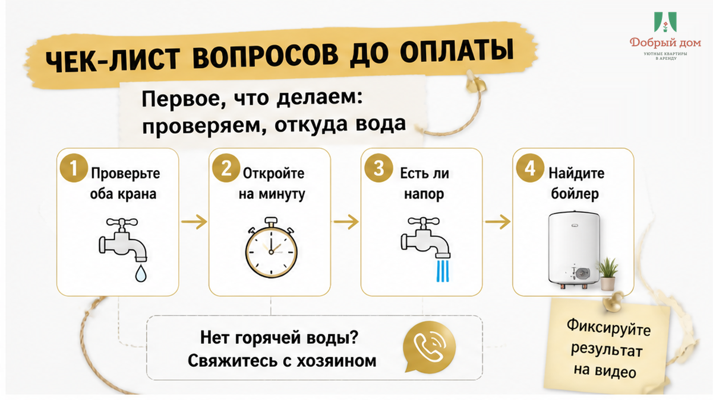
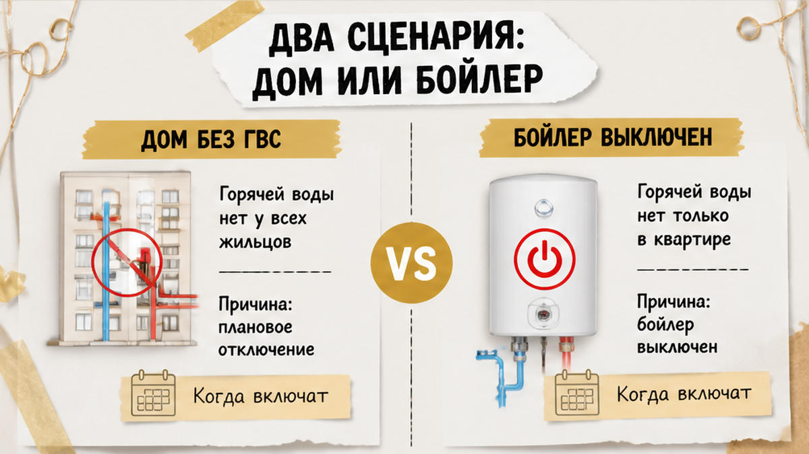
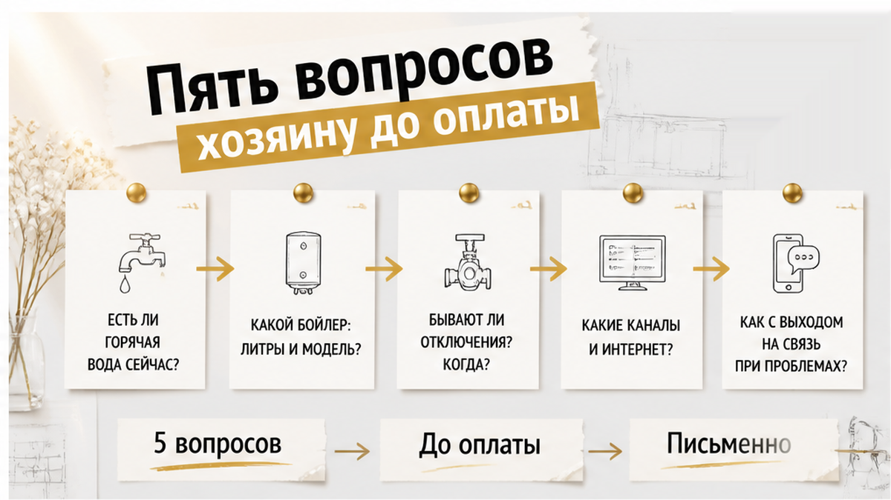
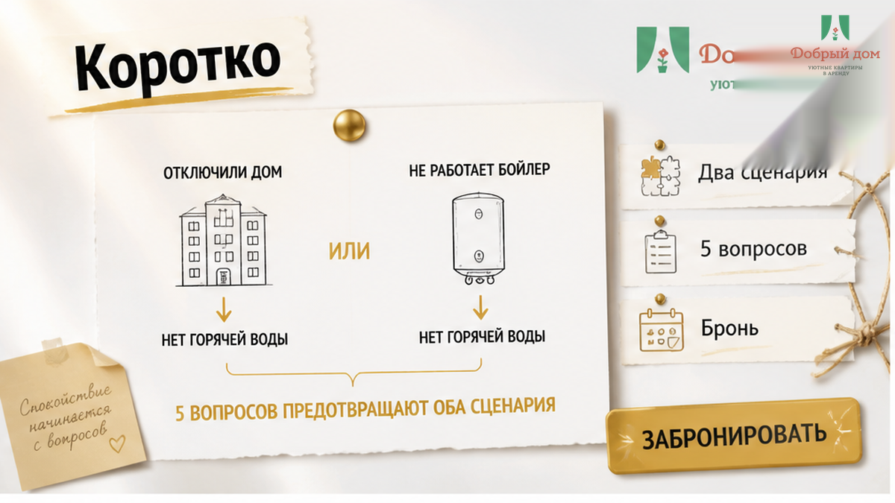

Вы заходите в квартиру, ставите сумку, открываете кран — а вода холодная. Проходит минута. Потом ещё одна. Деньги уже переведены, чемодан распакован, на улице темно. И в голове одна мысль: «Меня развели».
Стоп. В девяти случаях из десяти это не развод. Обычно причина одна из двух. И обе можно проверить за пять минут.
Разберём, что проверить первым. А ещё — какие пять вопросов задать хозяину до оплаты, чтобы такой вечер вообще не случился.

Не отправляйте сразу гневное сообщение. Сначала — два простых действия.
Дальше всё зависит от того, какой сценарий у вас.

Сценарий 1. В доме отключили центральную горячую воду. В конце лета плановые отключения ГВС — обычная история почти по всей стране. Коммунальщики опрессовывают и ремонтируют сети.
Проверить отключение можно по адресу: на сайте своей управляющей компании, через Госуслуги или на сервисах вроде kogdavoda.ru. Если отключение плановое, хозяин его не «включит». Вода появится по графику.
Сценарий 2. Индивидуальный бойлер выключен или ещё не нагрелся. Между гостями хозяева иногда отключают бак, чтобы не гонять электричество впустую.
Если бойлер включили, но бак пустой и холодный, нужно подождать. Ориентир по нагреву — 20–40 минут. Но это именно ориентир, а не гарантия: всё зависит от объёма бака и мощности. Бак на 80 литров с холодного старта может нагреваться и дольше.
Разница между сценариями простая. Во втором вам нужны кнопка и немного терпения. В первом — честный разговор с хозяином о том, как он компенсирует неудобство. Например, договориться о другом варианте проживания.
И вот здесь становится понятно, кто предупредил заранее, а кто просто «забыл».
Если подозреваете плановое отключение по дому, не гадайте — сверьте адрес. На сайте управляющей компании, через Госуслуги или на сервисах вроде kogdavoda.ru. Там будет дата начала и конца работ. Сохраните скриншот и отправьте хозяину в переписку: «вижу отключение с такого-то числа, вы в курсе?» Одно сообщение снимает половину споров.

Вот те самые пять строк в переписке, которые могут сохранить вам вечер. Задавайте их до перевода денег, пока у вас ещё есть выбор.
Есть спорный пункт, который многие делит пополам: нужно ли предупреждать о плановом отключении, если оно «всего на три дня».
Часть хостов считает, что нет: гость же приезжает не только ради душа. Мы считаем, что предупреждать нужно всегда. А вы бы хотели узнать об отключении до оплаты или уже в ванной? Напишите в комментариях. Интересно, где проходит ваша граница.
Полный список того, что стоит спросить до перевода денег — про воду, электрику, интернет и заселение — держим в нашем канале: t.me/Dobriy_dom_72. Там же коротко разбираем конкретные ситуации.
Даже если вода тёплая и всё хорошо, потратьте десять минут. Потом это может здорово выручить.
Последний пункт — самый важный.
Сообщение со временем и фото в первый час превращает «вы придумываете» в факт. Та же логика работает и с деньгами при выезде — см. Снял квартиру посуточно. Залог не вернули — нашли скол на плите.
Мы решили не проверять гостей на смекалку в тёмной квартире.
Инструкция приходит в мессенджер заранее, а не выдаётся у двери. Как попасть внутрь, где щиток, где бойлер, где его выключатель и что делать, если вода холодная.
Гость открывает переписку и находит ответ раньше, чем успевает занервничать. Подробнее о нашем подходе — в статье Оплатил квартиру посуточно. Код прислали от чужой двери.
Поддержка на связи в мессенджере. Вопрос про воду не должен ждать утра.
Если ситуацию нельзя решить одной кнопкой и получасовым ожиданием, подключается менеджер. Вместе с гостем разбираемся, что делать дальше. Про плановые отключения по адресу говорим до брони.
Это не героизм. Это нормальная работа хозяина.
Хотите так же спокойно — напишите нам до заезда, а не после: MAX max.ru/id660300569233_biz или менеджер в Telegram t.me/Dobriy_dom_Tyumen. Один вопрос про воду — и вечер в чужом городе уже выглядит иначе.

Холодная вода при заселении — почти всегда либо отключение по дому, либо выключенный бойлер.
Первое проверяется по адресу за минуту. Второе — кнопкой и двадцатью-сорока минутами ожидания. Пять вопросов до оплаты помогают снять оба варианта заранее.
Ищете квартиру посуточно в Тюмени, где инструкция приходит заранее, а не звучит как «разберётесь на месте»? Смотрите варианты и бронируйте на добрыйдом-72.рф. Звоните +7 993 574-83-22 — подберём квартиру под ваши даты и честно скажем, что с водой по адресу.